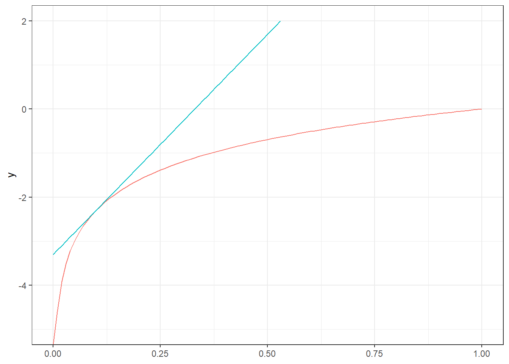
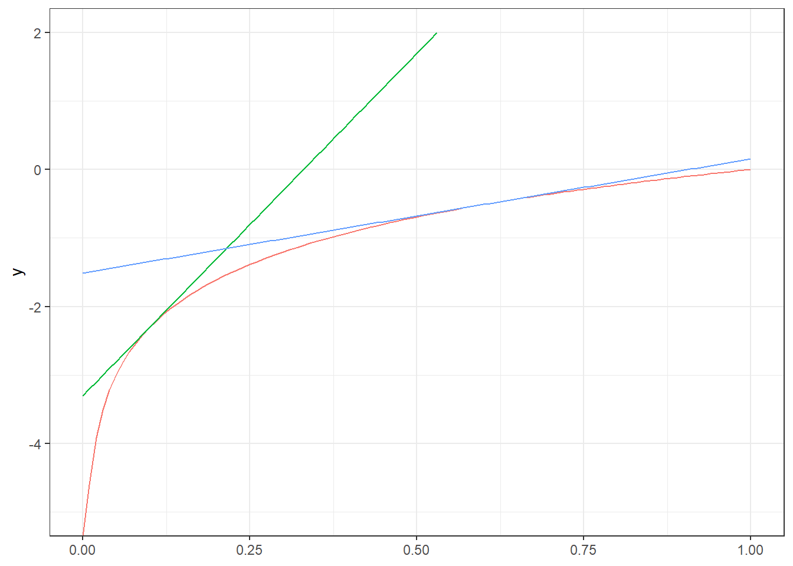

4 . fejezet Nemlineáris modellek
4.1 Elöljáróban: a marginális hatás általánosabb értelmezése
4.1.1 A marginális hatás fogalma
- Marginális hatás: a magyarázó változó kis növelésének hatására mekkora az eredményváltozó egységnyi magyarázóváltozó-növelésre jutó változása
- Tipikus egyszerűsítés: a magyarázó változó egységnyi növelésének hatására mennyit változik az eredményváltozó
- (Hiszen a kettő ugyanaz, ha a változó hatása lineáris)
- Idáig az \(i\)-edik magyarázó változó ilyen módon értelmezett marginális hatása és a \(\beta_i\) számértéke gyakorlatilag szinonima volt
4.1.2 A marginális hatás precízebben
- Definíció alapján a marginális hatás: \(\frac{\Delta Y}{\Delta X_j}\), ha \(\Delta X_j\) kicsiny
- Ugye egyetemen vagyunk \(\rightarrow\) a marginális hatás \(\frac{\partial Y}{\partial X_j}\)
- A többváltozós lineáris regresszió eddigi (sokasági) modelljében \(Y=\beta_0+\beta_1 X_1+\ldots+\beta_k X_k+\varepsilon\), ezért
\[\begin{align*} \frac{\partial Y}{\partial X_j}&=\frac{\partial}{\partial X_j}\left[\beta_0+\beta_1 X_1+\ldots+\right.\\ &\left.+\ldots+\beta_{j-1} X_{j-1}+\beta_j X_j+\beta_{j+1} X_{j+1}+\ldots +\beta_k X_k+\varepsilon\right]=\\ &=\beta_j \end{align*}\]
- …hát ezért tekinthettük eddig a marginális hatást és a becsült regressziós koefficienst szinonimának!
4.2 A linearitás feloldása
4.2.1 Emlékeztetőül: a linearitás következményei
A linearitás két dolgot vont maga után:
- Mindegy, hogy honnan indulva növelem a változót egy egységgel (a változó hatása lineáris)
- Mindegy, hogy a többi változó milyen szinten van rögzítve (additivitás)
E kettőt fogjuk most feloldani
4.2.2 Az additivitás feloldása: az interakció
- Eddigi modellünkben a marginális hatások a többi változó szintjétől függetlenül állandóak voltak
- Például: 1 Ft pluszjövedelem taglétszámtól függetlenül azonos többletkiadást jelent…?
- Ha nem, akkor azt mondjuk, hogy a két változó között interakció van: az egyik marginális hatásának nagyságát befolyásolja a másik szintje
- A kapcsolat tehát marginális hatás és szint között van (nem marginális hatás és marginális hatás vagy szint és szint között!)
- Kézenfekvő indulás: az egyik változó szintje lineárisan hasson a másik marginális hatására; sokaságban felírva:
\[\left(\beta_J+\beta_{JT} \mathrm{Tag}\right) \mathrm{Jov},\]
ahol \(\beta_{JT}\) az interakció hatását kifejező (lineáris) együttható - Helyezzük ezt be a (sokasági) regresszióba:
\[Y=\beta_0+\left(\beta_J+\beta_{JT} \mathrm{Tag}\right) \mathrm{Jov} + \beta_T \mathrm{Tag}+\varepsilon,\]
azonban felbontva a zárójelet:
\[\begin{align*} Y&=\beta_0+\beta_J \mathrm{Jov}+\beta_{JT} \mathrm{Tag} \cdot \mathrm{Jov} + \beta_T \mathrm{Tag}+\varepsilon =\\ &=\beta_0 + \beta_J \mathrm{Jov}+ \left(\beta_T + \beta_{JT} \mathrm{Jov}\right) \mathrm{Tag}+\varepsilon \end{align*}\]
Tehát az interakció szükségképp, automatikusan
szimmetrikus
: ha az egyik változó szintje hat a másik marginális hatására akkor szükségképp fordítva is: a másik szintje is hatni fog az előbbi marginális hatásáraAzaz
egyszerre
lesz igaz, hogy \(\left(\beta_J+\beta_{JT} \mathrm{Tag}\right) \mathrm{Jov}\) és \(\left(\beta_T+\beta_{JT} \mathrm{Jov}\right) \mathrm{Tag}\): attól függően, hogy milyen szempontból nézzük (melyik marginális hatását vizsgáljuk, ezt még ld. később is)A regresszióban így elég egyszerűen ennyit írni:
\[\beta_T \mathrm{Tag} + \beta_J \mathrm{Jov} + \beta_{JT} \left(\mathrm{Jov} \cdot \mathrm{Tag}\right).\]
…mindkét – másik szintjétől függő – marginális hatás ebből kiadódik, függően attól, hogy hogyan bontjuk fel a zárójelet (melyik változót vizsgáljuk)
Ez a marginális hatás pontosabb értelmezése mellett még szebben látható
4.2.3 A marginális hatás interakciók esetén
- Ha interakció van, például a \(l\)-edik és az \(m\)-edik tag között, akkor az \(l\)-edik marginális hatása:
\[\begin{align*} \frac{\partial Y}{\partial X_l}&=\frac{\partial}{\partial X_l}\left[\beta_0+\beta_1 X_1+\ldots+\right.\\ &\left.+\ldots+\beta_l X_l+\ldots+\beta_{m} X_m+\ldots+\beta_k X_k+\beta_{lm} X_l X_m+\varepsilon\right]=\\ &=\beta_l+\beta_{lm} X_m \end{align*}\]
- Így precíz az előbbi állításunk arról, hogy ha az egyik szerint vizsgáljuk a marginális hatást, akkor az a másik szintjétől fog függeni (gondoljuk hozzá a másik szerinti deriválást is!)
4.2.4 A változónkénti linearitás feloldása: egy motiváló példa
Már volt: mit jelent az, ha megsértjük a
marginális hatás nem függ attól, hogy a többi magyarázó változót milyen szinten rögzítjük
következményét a linearitásnakÉs ha a
marginális hatás nem függ attól, hogy milyen szintről indulva növeljük a változót
következményt szeretnénk feloldani?Például: 1 évvel idősebb életkor kiinduló életkortól függetlenül azonos kiadásváltozást jelent…?
Használjunk a lineáris függvényforma helyett mást, például négyzeteset (parabolát):
\[\frac{\partial}{\partial X_j}\left[\ldots+\beta_j X_j + \beta_{jj} X_j^2+\ldots\right]=\beta_j+2\beta_{jj} X_j\]
4.2.5 A változónkénti linearitás feloldása: egy motiváló példa
Szemléletesen az egy magyarázó változós esetben:

Szélsőértékhely nyilvánvaló (első derivált előjelet vált): \(\beta_j+2\beta_{jj} X_j=0 \Rightarrow X_j=-\frac{\beta_j}{2\beta_{jj}}\)
4.2.6 Linearitás, mint közelítés
- Az élet általában nemlineáris
- Miért használunk mégis lineáris modelleket: mert sokszor nem térnek el (nagyon) a valóságtól, de mégis sokkal könnyebben kezelhetőek matematikailag
- Ez tehát az esetek többségében egy közelítés
- Mint ilyen: vizsgálni kell az érvényességi határokat
Munkaponti linearizálás



4.2.7 Érvényességi határok
- Az érvényességi határokat az eddig látott modellekben is érdemes végiggondolni
- Azonnal kézenfekvő példa: a konstans (nagyon sok esetben)
- De sok meredekségnél is megragadható ez (fogyasztási függvény példája)
- Ez is egyfajta munkaponti linearizálás
4.2.8 Nemlinearitás fajtái
- Az \(\beta_1+\beta_2 X+\beta_3 X^2\) egy nemlineáris kifejezés (matematikailag)
- De figyelem: ennek ellenére minden további nélkül, tökéletesen kezelhető pusztán az eddig látott (lineáris!) eszköztárral, hiszen az OLS-nek mindegy, hogy a második magyarázó változó értékei történetesen épp az első négyzetei
- (Egészen addig nincs baj, amíg a kapcsolat nem lineáris)
- Nem úgy mint a \(\beta_1 X^{\beta_2}\) \(\rightarrow\) ez nem becsülhető OLS-sel
- A megkülönböztetés végett az első esetet változójában, a másodikat paraméterében nemlineáris modellnek nevezzük
- Mi van
nemlinearitást okozó pozícióban
4.2.9 Változójában nemlineáris modell
- Jellemző: továbbra is fennáll a
változók konstansokkal szorozva majd összeadva
(tehát: lineáris kombinációs) struktúra - De elképzelhető, hogy egy változó egy
eredeti
változó transzformáltja - Itt szükségképp nemlineáris transzformációról beszélünk!
- Vegyük észre, hogy az
eredeti
éstranszformált
közti megkülönböztetés teljesen mesterséges (csak mi tudjuk, hogy mi volt az adatbázisban bemenő adatként), az OLS-nek mindegy - Ide tartozik a kvadratikus hatás, általában az \(X^a\) magyarázó változók, a \(\log_a X\), az \(a^X\) stb., ahol \(a\) konstans
- Az előzőek miatt a becslés ugyanaz, egyedül az interpretálás igényel további tárgyalást
4.2.10 Paramétereiben nemlineáris modell
- Megsérti a lineáris kombináció struktúráját: paraméter nem csak szorzóként szerepel a regresszióban
- Például \(X^{\beta}\), \(\log_{\beta} X\) stb.
- Ez már nem becsülhető OLS-sel: az eredmányváltozó nem állítható elő mátrixműveletekkel
- Más módszert fogunk használni
4.2.11 Interakció és kvadratikus hatás revisited
- Az előzőek fényében nyilvánvaló: a kvadratikus hatás egyfajta (igen egyszerű) változójában nemlineáris modell
- Az interakció szintén változóbeli nemlinearitás, de nem annyira kézenfekvő módon (mindenképp indokolt a külön tárgyalása)
4.2.12 Nemlinearitás kezelése: NLS
- Vegyük észre, hogy a \(\min_{\boldsymbol{\beta}} ESS\) célfüggvény akkor is tartható, ha nemlineáris modellt specifikálunk!
- (Csak az ESS számításához szükséges \(\widehat{Y}\)-ok másképp jönnek ki, de ez a fenti optimalizáció szempontjából teljesen mindegy)
- Oldjuk meg ezt az optimalizációs feladatot!
- Ez a nem-lineáris legkisebb négyzetek (NLS, non-linear least squares) módszere
- Sajnos mondani könnyebb, mint a gyakorlatban kivitelezni; szemben a lineáris specifikációval, a kritériumfelület nem kvadratikus, emiatt nincs egyetlen művelettel megtalálható optimum
- Van-e egyáltalán egyértelmű (globális) optimum? Mi van, ha több lokális optimum létezik?
- Ettől el is tekintve, a konkrét optimalizáció számos gyakorlati problémát vethet fel, mivel valamilyen iteratív algoritmus kell
- Több lehetőség van, különféle előnyökkel és hátrányokkal (Gauss–Newton keresés, Levenberg–Marquardt algoritmus, konjugált gradiens keresés stb.), de mind rengeteg numerikus kérdést vet fel:
- Meg tudjuk találni az optimumot? Biztosan? (Lehet-e baj a konvergenciával? Mi legyen a konvergencia-kritérium?)
- Mennyi idő alatt találjuk meg?
- Milyen kezdőértékből induljunk? (Milyen a módszer numerikus stabilitása?)
- stb. stb. stb.
4.2.13 Nemlinearitás kezelése: algebrai linearizáció
- Mi a fenti (mindig alkalmazható) módszerrel szemben egy másik (könnyebb, de nem mindig alkalmazható) módszert fogunk vizsgálni: algebrai linearizálás
- Alkalmas transzformációval a nemlineáris problémát lineárissá alakítjuk, azt OLS-sel megoldjuk, majd a kapott eredményeket visszatranszformáljuk az eredeti transzformáció inverzével
- Például: \(Y=\beta_1 X^{\beta_2} \varepsilon\) paramétereiben nemlineáris…
- …de mindkét oldal logaritmusát véve \(\log Y =\log \beta_1 + \beta_2 \log X + \varepsilon'\) már az!
- Adatbázis logaritmálása, eredmények visszahatványozása
- (Amint mondtuk, nem mindig alkalmazható, de azért nagyon sok, gyakorlatilag fontos esetben igen)
- Természetesen itt is eltérő, specifikus értelmezések jelenthetnek meg
4.3 Néhány nevezetes, paraméterében nemlineáris modell
4.3.1 Log-log modell
- Például a Cobb-Douglas termelési modell:
\[Y=\beta_1 L^{\beta_L} K^{\beta_K}\varepsilon,\]
ahol \(Y\) a kibocsátás, \(L\) a munka, \(K\) a tőke (ill. általában a termelési tényezők) felhasználása - Elaszticitása:
\[\mathrm{El}_L\left(L,K\right)=\frac{\frac{\mathrm{d} Y}{Y}}{\frac{\mathrm{d} L}{L}}=\frac{\mathrm{d}Y}{\mathrm{d}L} \frac{L}{Y}=\beta_1 \beta_L L^{\beta_L-1} K^{\beta_K} \frac{L}{\beta_1 L^{\beta_L} K^{\beta_K}}=\beta_L\]
- Ezért nevezik konstans elaszticitású modellnek is
- Kezelése linearizálással: mindkét oldalt logaritmáljuk
\[\log Y = \log \beta_1 + \beta_L \log L + \beta_K \log K + \varepsilon'\]
- Minden változót (eredmény és összes magyarázó is) logaritmálni kell
- Innen a modell neve
- Csak a konstans lesz logaritmálva, a többi koefficienst a transzformáció ellenére (ill. épp azért…) közvetlenül kapjuk
- Volumenhozadék (skálahozadék): \(\beta_K + \beta_L\) viszonya 1-hez
4.3.2 Log-lin modell
- Például a jövedelem alakulása:
\[Y=e^{\beta_1 + \beta_2 X + \varepsilon}\]
- Linearizálás ismét mindkét oldal logaritmálásával:
\[\log Y = \beta_1 + \beta_2 X + \varepsilon\]
- Elnevezés logikája így már látható: az eredményváltozó logaritmálva, de a magyarázó változók maradnak szintben
- Növekedési ráta: \(e^{\beta_1 + \beta_2 \left(X+1\right) + u}=Ye^{\beta_2}\), pillanatnyi növekedési ütem: \(\beta_2=\frac{\mathrm{d}\log Y}{\mathrm{d}X}=\frac{1}{Y} \frac{\mathrm{d}Y}{\mathrm{d}X}\)
- Elaszticitás: \(\mathrm{El}_X\left(X\right)=\frac{\mathrm{d}Y}{\mathrm{d}X} \frac{X}{Y} = \beta_2 X\), tehát csak \(X\)-től függ
4.3.3 Lin-log modell – kakukktojás!
- Az előzőek alapján már világos a jelentése (pl. terület és kínálati ár összefüggése):
\[Y=\beta_1 + \beta_2 \log X + \varepsilon\]
- Miért kakukktojás?
- \(\beta_2\) értelmezése:
\[\frac{\mathrm{d}Y}{\mathrm{d}X}=\frac{\beta_2}{X} \Rightarrow \beta_2=\frac{\mathrm{d} Y}{\mathrm{d} X / X}\]
- Elaszticitás:
\[\mathrm{El}_X\left(X\right)=\frac{\beta_2}{X}\frac{X}{Y}=\frac{\beta_2}{Y},\]
tehát csak \(Y\)-től függ (közvetlenül)
A közvetlenül
itt arra utal, hogy természetesen az \(Y\) helyébe beírható lenne a – csak \(X\)-eket tartalmazó – felírása.
4.3.4 Reciprok modell – kakukktojás
- Például keresleti modell:
\[Y=\beta_1 + \frac{\beta_2}{X}+\varepsilon\]
- Miért kakukktojás?
- Aszimptotikusan: \(\lim_{X\rightarrow\infty} \mathbb{E}\left(Y\mid X\right) = \beta_1\)
- Határkiadás: \(\frac{\mathrm{d}Y}{\mathrm{d}X}=-\frac{\beta_2}{X^2}\)
- Elaszticitás:
\[\mathrm{El}_X\left(X\right)=-\frac{\beta_2}{X^2}\frac{X}{Y}=\frac{\beta_2}{XY}\]
- Paraméterek értelmezése, \(\beta_2\) előjelének jelentősége az
aszimptotikus
viselkedés szempontjából: az élvezeti cikkek példája
4.3.5 Egy komplex példa vegyes modellre
- Tekintsük a következő kiadási modellt:
\[Y=\beta_1 e^{\beta_N N} J^{\beta_J+\beta_{JN} N} \varepsilon,\]
ahol \(Y\) a kiadás, \(N\) a nem (dummy, 1 ha férfi), \(J\) a jövedelem - Alapvetően log-log jellegű (bár a \(\beta_N\) felfogható exponenciálisként is), ráadásul még dummyzva is, hogy minden eltérő legyen nemenként (strukturális törés) - Ez utóbbi miatt mondhatjuk egyszerűen, hogy log-log jellegű - Linearizálás:
\[\log Y = \log \beta_2 + \beta_N N + \beta_J J + \beta_{JN} \left(J\cdot N\right)+ \varepsilon'\]
- Paraméterértelmezések:
- \(\beta_1\) és \(\beta_N\) \(\rightarrow\) autonóm fogyasztás mindkét nemre teljesen külön (exponenciális jelleg ebben)
- A jövedelemnél célszerű az elaszticitást megragadni (a log-log jelleg miatt), hiszen: \(El\left(Y,J\right)=\beta_J+\beta_{JN} N\), azaz az elaszticitás nemtől függő (avagy: mindkét nemre teljesen külön elaszticitás, referencia-kódolás jelleggel)
- \(\beta_1\) és \(\beta_N\) \(\rightarrow\) autonóm fogyasztás mindkét nemre teljesen külön (exponenciális jelleg ebben)
4.4 Specifikációs tesztek
4.4.1 A specifikációs tesztek
- Itt már nagyon erősen felmerül a kérdés: hogyan dönthetek a különféle függvényformák között?
- Ld. a termelési függvény példáját \(\rightarrow\) megadható lineárisan és Cobb-Douglas jelleggel (eredmény nagyon nem mindegy)
- Hogyan lehet analitikusan dönteni?
- Az előző példára: BM-teszt, PE-teszt stb.
- Általánosságban (nem csak log/lin kérdésekre, mint az előzőek): ún. specifikációs tesztek
4.4.2 Egy egyszerű specifikációs teszt
- Egy egyszerű ötlet: adjuk hozzá a magyarázó változókhoz a magyarázó változók valamilyen nemlineáris transzformáltját (tipikusan négyzeteiket vagy logaritmusaikat)…
- …és nézzük meg, hogy együttesen szignifikánsak-e!
- Ha igen, az specifikációs hibára utal
- (Tehát figyelem, ezt alapvetően nem arra használjuk, hogy arra következtessünk, hogy egy adott konkrét változó négyzetét vagy logaritmusát hozzá kell-e adni a függvényformához, hanem összességében nézzük őket, specifikációs tesztként)
- Hátrány: sok szabadságfokot használ el, és csak elég speciális alakú nemlinearitásokkal tesztel
4.4.3 Ramsey RESET-je
- A modellspecifikáció általános tesztje; emiatt előnye: nem egy adott specifikációs kérdésre keres választ, hanem általában vizsgálja, hogy a specifikáció jó-e; hátránya, hogy ha nemleges választ ad, nem derül ki, hogy pontosan mi a specifikáció baja
- Trükk: új regressziót becsül, melynek eredményváltozója ugyanaz, de a magyarázó változókhoz hozzáadja az eredeti regresszió becsült eredményváltozójának magasabb hatványait (\(\widehat{Y}^3\)-ig néha \(\widehat{Y}^4\)-ig is):
\[Y = \beta_0'+\beta_1' X_1 + \beta_2' X_2 + \ldots + \beta_k' X_k + \gamma_1 \widehat{Y}^2 + \gamma_2 \widehat{Y}^3 + \varepsilon'\]
- Amit tesztelni kell az előzőhöz hasonlóan: \(H_0: \gamma_1 = \gamma_2 = 0\) (\(F\)-próba és LM-próba is van, heteroszkedaszticitásra is robusztussá tehető)
- Ilyen módon takarékos a szabadsági fokokkal, csak 2-3-at használ el (a fenti trükkel
összesűríti
a magyarázó változókat), ráadásul általánosabb alakú nemlinearitások is beleférnek ebbe, mint a csak négyzetekkel/logaritmusokkal tesztelés - Specifikációs teszt, tehát kihagyott változó detektálására általában nem alkalmas